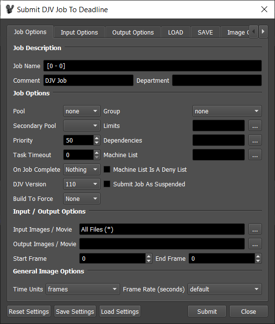
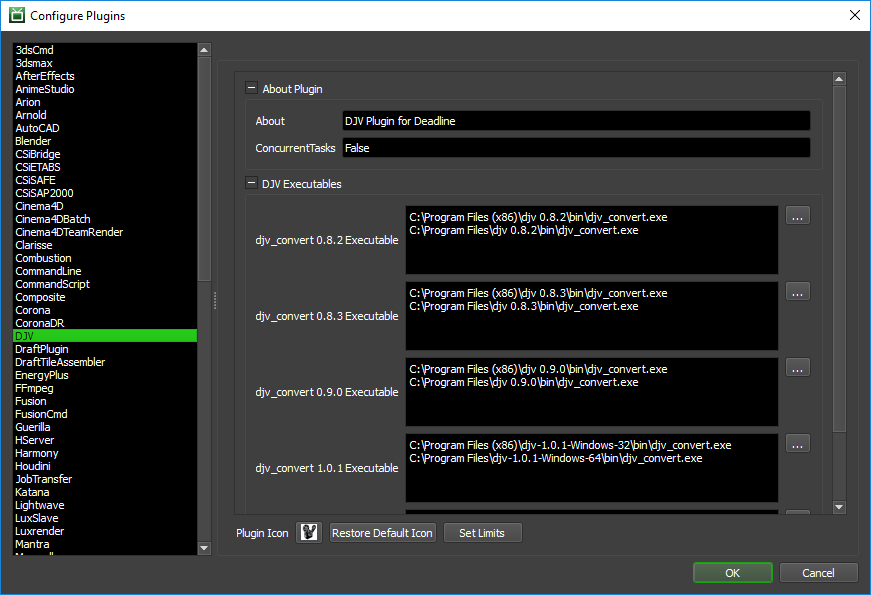

DJV¶
Job Submission¶
You can submit DJV jobs from the Monitor. You can use the Submit menu, or you can right-click on a job and select Scripts -> Submit DJV Quicktime Job To Deadline to automatically populate some fields in the DJV submitter based on the job’s output.
Submission Options¶
The general submission options are explained in the Job Submission documentation, and the Draft/Integration options are explained in the Draft and Integration documentation. You can get more information about the DJV specific options by hovering your mouse over the label for each setting. The Settings buttons can be used to quickly save and load presets, or reset the settings back to their defaults.
Plugin Configuration¶
You can configure the DJV plugin settings from the Monitor. While in power user mode, select Tools -> Configure Plugins and select the DJV plugin from the list on the left.
Note, if the executable supports a MAJOR.MINOR.REVISION (9.0.123) numbering system in its path, then you will need to configure the explicit exe path to the particular revision that you have installed on your machines. Deadline does not track every possible revision available or indeed where it might be custom installed to, so a studio should verify their exe paths are correct for each application version they choose to use with Deadline. Multiple exe paths can still be declared and the first one that is found on a particular Worker on a particular platform will be used from the exe list.
DJV Executables
DJV Executable: The path to the djv_convert executable file used for rendering. Enter alternative paths on separate lines. Different executable paths can be configured for each version installed on your render nodes.
FAQ¶
Can I create Apple Quicktime mov files with DJV?
Yes. On Windows, you must use the x32 bit version of DJV only. The LibQuicktime based codecs are only available in DJV v1.0.1 or later AND only on Linux. As an alternative, you can also use Thinkbox’s Draft product (image/movie creation automation toolkit) which is included in Deadline.
Can I create EXR files compressed with DreamWorks Animations DWAA or DWAB compression?
Yes, but this is only supported in DJV v1.0.01 or later.
Error Messages and Meanings¶
This is a collection of known DJV error messages and their meanings, as well as possible solutions. We want to keep this list as up to date as possible, so if you run into an error message that isn’t listed here, please contact Deadline Support and let us know.
[ -auto_tag] and [ -tag Name Value] options not working in DJV plugin
DJV has a bug causing DJV to crash which is currently stopping these 2 command line flag options from working. The code has been commented out in the DJV plugin and can be re-enabled as such time the bug is fixed by the DJV developer.
Various Command Line options failing in DJV
Many of the [djv_convert] command line flags are broken due to “spaces” being present between the flag options in DJV versions earlier than v1.0.1. This is all resolved in DJV v1.0.1 and later, so it is recommended to use at least this version (wrapping the flag options with additional quotation marks does not resolve the issue as it’s a bug in the actual [djv_convert] command line args parser function).

{kind=link}
{kind=link}